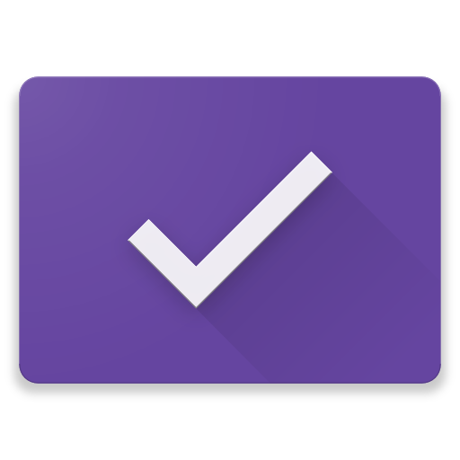
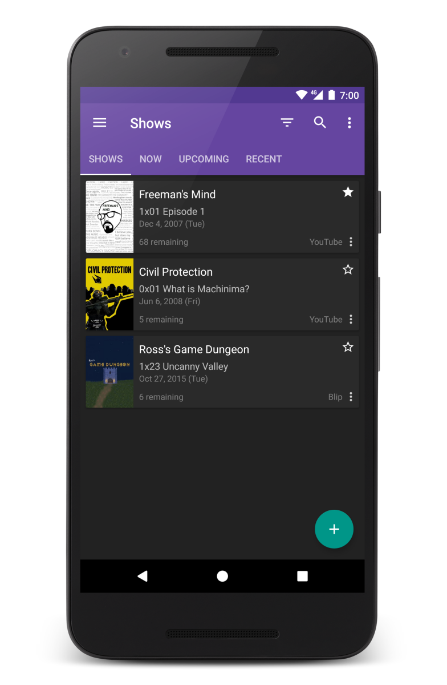

SeriesGuide helps you manage (re)watching your favorite TV shows.


SeriesGuide suggests currently trending shows (powered by trakt) and is backed by the huge TV show catalog of theTVDb.
Even access your trakt recommendations and library after connecting your account.
Check in what you are watching on trakt or tvtag.
Or share an awesome episode with any supported Android app, including Google+, Facebook and Twitter.
Visual indicators make it easy to spot unseen episodes and the statistics tool lets you see how you are doing.
You also get
and much more.